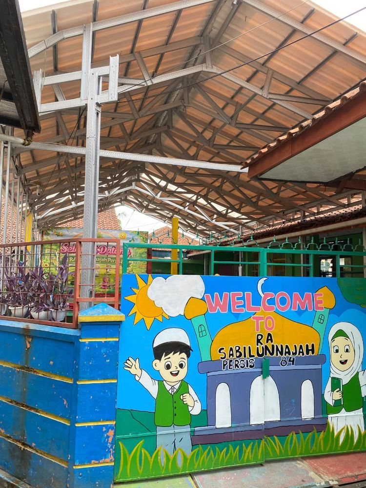
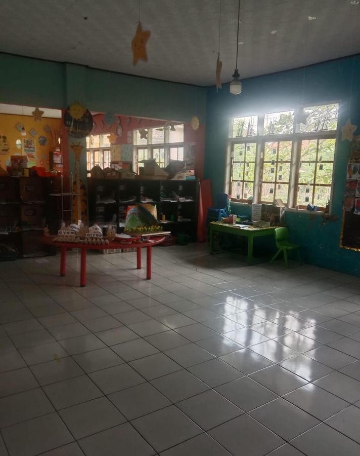
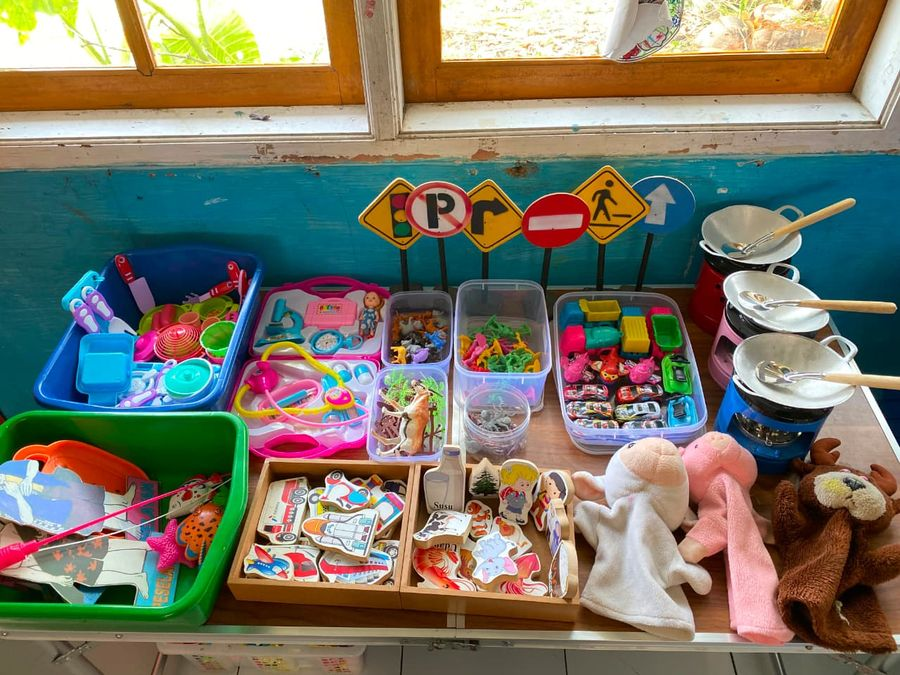
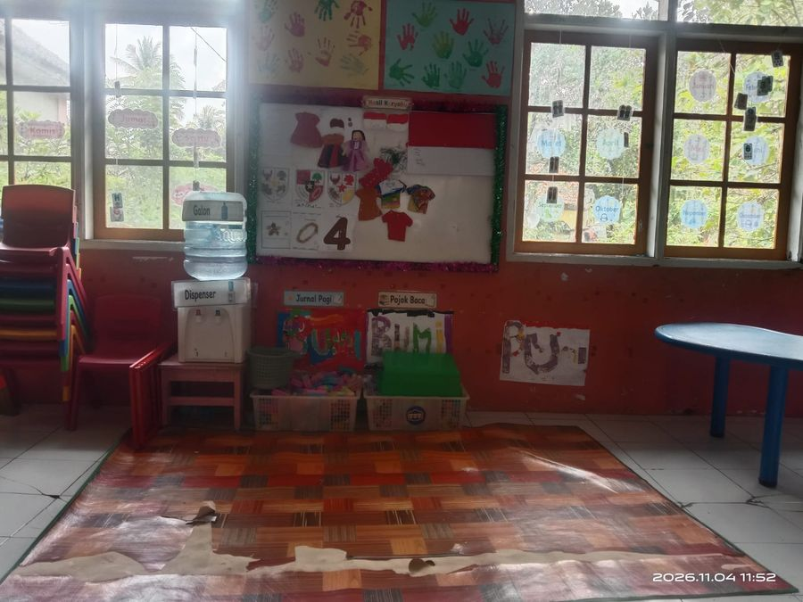
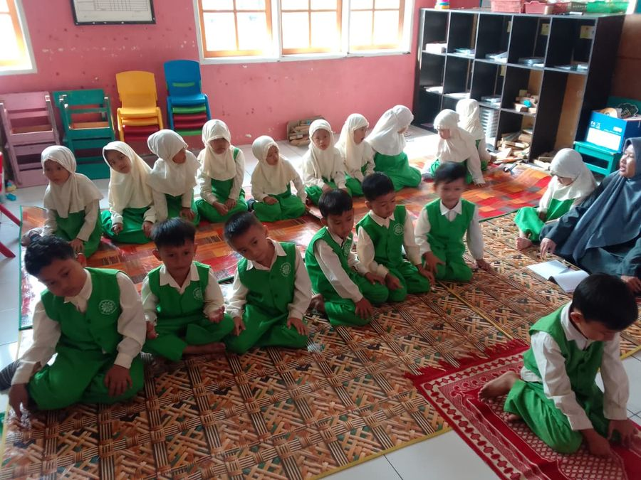
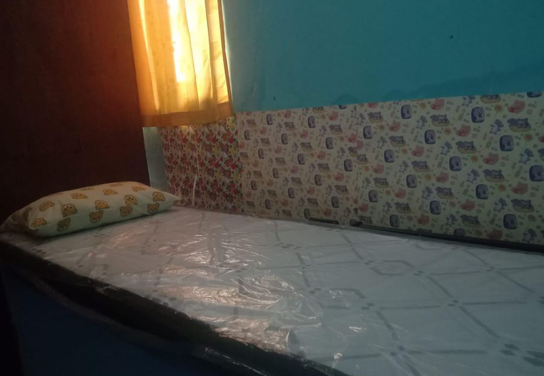
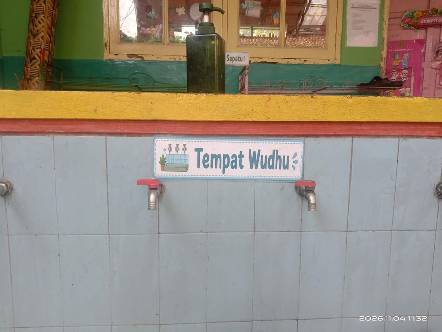
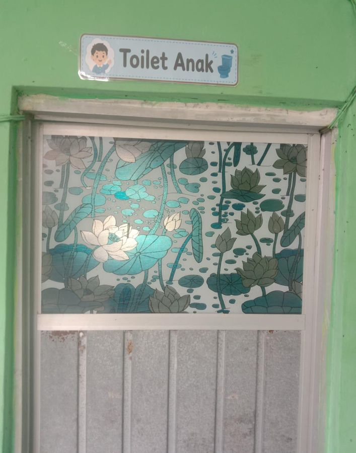

RA Sabilunnajah Persis 84 berkomitmen membentuk murid yang sholeh, berakhlak mulia, kritis, kreatif, serta memiliki kepedulian terhadap lingkungan melalui pendidikan dan pembiasaan sejak dini.
Informasi Pendaftaran
RA Sabilunnajah Persis 84 berdiri pada tahun 1998 dan beralamat di Kp. Cidoyang RT 003 RW 002, Kelurahan Sirnagalih, Kecamatan Indihiang, Kota Tasikmalaya.
Sekolah ini dipimpin oleh Yati Supriati, S.Pd.I. Kegiatan pendidikan didukung oleh 7 orang guru dan diarahkan untuk mewujudkan murid yang sholeh, berakhlak mulia, kritis, kreatif, serta berwawasan lingkungan.
"Terwujudnya Murid yang Sholeh, Berakhlak Mulia, Kritis, Kreatif, dan Berwawasan Lingkungan."
Pembiasaan ibadah harian dan doa-doa harian untuk menanamkan nilai keimanan dan ketakwaan sejak dini.
Kegiatan sholat Dhuha sebagai bagian dari pengenalan dan pembiasaan ibadah kepada anak sejak dini.
Kegiatan tahfidz untuk mengenalkan dan membiasakan anak menghafal Al-Qur'an sejak dini.
Fasilitas yang tersedia untuk mendukung kegiatan belajar, bermain, ibadah, serta kebutuhan peserta didik RA Sabilunnajah Persis 84.







Dokumentasi kegiatan belajar, pembiasaan ibadah, serta ekstrakurikuler tahfidz, menggambar dan mewarnai, drumband, dan manasik haji. Peserta didik juga meraih prestasi dalam bidang fashion show, mewarnai, gerak dan lagu, serta senam.